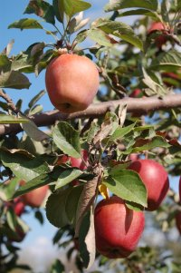

Welcome

Welcome to the home page of our family farm, Sunny Acres, where there's always something happening. With the coming of fall, we're gearing up for our big AutumnFest and Farm Show. If you haven't visited our famous Corn Maze, be sure to do so before it gets torn down on November 5. This year's maze is bigger and better than ever.
Farms can be educational and Sunny Acres is no exception. Schools and home-schooling parents, take an afternoon with us at our Petting Barn. We have over 100 friendly farm animals in a clean environment. Kids can bottle feed the baby goats, lambs, and calves while they learn about nature and the farming life. Please call ahead for large school groups.
When the sun goes down this time of year, we're all looking for a good fright. Sunny Acres provides that too with another year of the Haunted Maze. Please plan on joining us during weekends in October or on Halloween for our big Halloween Festival.
Of course, Sunny Acres is above all, a farm. Our Farm Shop is always open with reasonable prices and great produce. Save even more money by picking your own fruits and vegetables from our orchards and gardens.
We all hope to see you soon, down on the farm.
— Tammy & Brent Nielsen
Hours
- Farm Shop 9 am - 5 pm Mon - Fri; 9 am - 3 pm Sat
- Corn Maze 11 am - 9 pm Sat; 11 am - 5 pm Sun
- Haunted Maze 5 pm - 9 pm Fri & Sat
- Petting Barn 9 am - 4 pm (Mon - Fri); 11 am - 3pm (Sat & Sun)
Directions
- From Council Bluffs, proceed east on I-80
- Take Exit 38 North to the Drake Frontage Road
- Turn right on Highway G
- Proceed east for 2.5 miles
- Sunny Acres is on your left; watch for the green sign